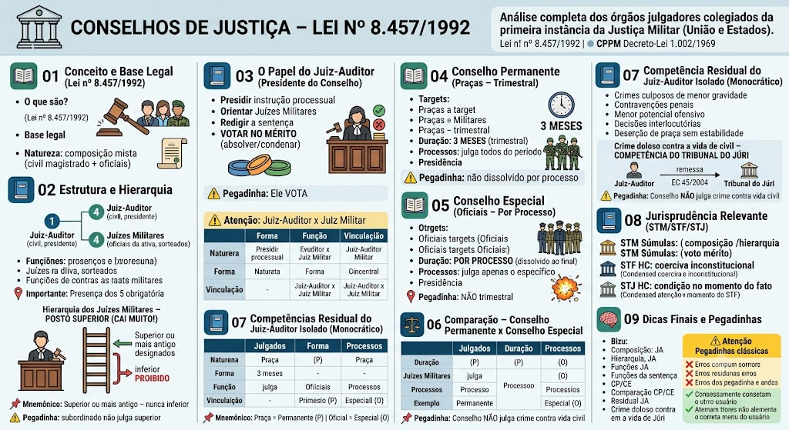

O que são os Conselhos de Justiça?
O que são os Conselhos de Justiça?
Os Conselhos de Justiça são os órgãos julgadores colegiados da primeira instância da Justiça Militar (da União e dos Estados). São responsáveis por julgar os crimes militares, com exceção das hipóteses de competência monocrática do Juiz-Auditor ou do Tribunal do Júri.
Base legal: Lei nº 8.457/1992 (reestruturou a Justiça Militar da União e organizou a composição dos Conselhos), em complemento ao CPPM (Decreto-Lei nº 1.002/1969).
Natureza: são órgãos colegiados, com composição mista (togado + militares), refletindo o princípio da hierarquia e disciplina.
Composição do Conselho
Composição do Conselho
Art. 4º da Lei 8.457/1992: 'Os Conselhos de Justiça serão compostos por um Juiz-Auditor, que os presidirá, e por quatro Juízes Militares, oficiais da ativa, sorteados na forma da lei.'
Composição:
- 1 Juiz-Auditor: juiz de carreira, bacharel em Direito, concursado. É o presidente do Conselho, responsável pela direção da instrução processual e pela regularidade formal do julgamento.
- 4 Juízes Militares: oficiais da ativa, sorteados para compor o Conselho. Eles participam do julgamento do mérito (condenação ou absolvição).
📌 Importante: a presença do Juiz-Auditor e dos 4 oficiais é obrigatória para a validade da sessão de julgamento.
Hierarquia dos Juízes Militares – POSTO SUPERIOR (CAI MUITO!)
Hierarquia dos Juízes Militares – POSTO SUPERIOR (CAI MUITO!)
Os Juízes Militares que compõem o Conselho devem, em regra, ser de posto superior ao do acusado (Art. 4º, §1º, da Lei 8.457/1992 e Art. 57 do CPPM).
Regras:
- Se houver oficial de posto superior disponível, ele deve compor o Conselho;
- Se não houver oficial de posto superior disponível, pode ser designado oficial do mesmo posto, desde que seja o mais antigo (regra de antiguidade);
- No Conselho Especial (para Oficiais), a exigência de patente superior é ainda mais rigorosa;
- No Conselho Permanente (para Praças), os oficiais julgadores podem ser capitães, majores ou tenentes-coronéis, conforme a disponibilidade.
⚠️ Pegadinha: A banca pode afirmar que qualquer oficial pode julgar um réu de posto superior – ERRADO. O oficial julgador deve ser de posto superior ou, no mínimo, mais antigo se do mesmo posto.
Mnemônico da hierarquia
Mnemônico da hierarquia
📌 “Superior ou mais antigo – nunca inferior para julgar.”
🧠 Lembrete: a hierarquia é um dos pilares da Justiça Militar – um oficial não pode ser julgado por um subordinado.
Funções do Juiz-Auditor
Funções do Juiz-Auditor
O Juiz-Auditor é o membro civil (togado) do Conselho de Justiça. Suas funções são múltiplas:
- Presidir a instrução processual: conduz as audiências, ouve testemunhas, determina diligências;
- Orientar os Juízes Militares: esclarece dúvidas sobre a lei e o procedimento;
- Redigir a sentença: materializa a decisão do Conselho em documento formal;
- VOTAR NO MÉRITO (surpresa!): O Juiz-Auditor vota junto com os 4 oficiais no julgamento das questões de fato e de direito (condenação/absolvição, fixação da pena). Não é um mero observador – ele integra o colegiado com direito a voto.
Voto de desempate: Em caso de empate, o voto do Juiz-Auditor pode ser decisivo (dependendo das regras de quórum, mas ele vota como qualquer membro).
⚠️ Pegadinha: A banca pode afirmar que o Juiz-Auditor não vota na absolvição ou condenação – ERRADO. Ele vota no mérito, juntamente com os oficiais.
Juiz-Auditor x Juiz Militar – Diferença de natureza
Juiz-Auditor x Juiz Militar – Diferença de natureza
| Critério | Juiz-Auditor | Juiz Militar |
|---|---|---|
| Natureza | Civil (magistrado de carreira) | Militar da ativa (oficial) |
| Formação | Bacharel em Direito, concursado | Formação militar, posto definido |
| Função | Presidir, instruir, redigir, e votar | Julgar o mérito (absolver/condenar) |
| Vínculo | Permanente (carreira) | Temporário (escalado para o Conselho) |
O que é o Conselho Permanente?
O que é o Conselho Permanente?
O Conselho Permanente é o órgão julgador competente para julgar Praças (soldados, cabos, sargentos, subtenentes, e equivalentes nas Polícias Militares).
Características:
- Duração: 3 (três) meses (trimestral) – Art. 4º, §2º, da Lei 8.457/1992;
- Juízes Militares: oficiais da ativa, sorteados para compor o Conselho durante todo o trimestre;
- Processos: julga todos os processos de Praças que tramitam no período;
- Presidência: presidido por um Juiz-Auditor da respectiva Auditoria.
📌 Exemplo: O Conselho Permanente que funciona de janeiro a março julga as deserções e outros crimes de Praças ocorridos nesse período.
⚠️ Pegadinha: O Conselho Permanente não é dissolvido ao final de cada processo – ele permanece ativo por 3 meses, julgando vários processos.
Conselho Permanente – dura 3 meses
Conselho Permanente – dura 3 meses
O Conselho Permanente é o órgão julgador competente para julgar Praças (soldados, cabos, sargentos, subtenentes, e equivalentes nas Polícias Militares).
Características:
- Duração: 3 (três) meses (trimestral) – Art. 4º, §2º, da Lei 8.457/1992;
- Juízes Militares: oficiais da ativa, sorteados para compor o Conselho durante todo o trimestre;
- Processos: julga todos os processos de Praças que tramitam no período;
- Presidência: presidido por um Juiz-Auditor da respectiva Auditoria.
📌 Exemplo: O Conselho Permanente que funciona de janeiro a março julga as deserções e outros crimes de Praças ocorridos nesse período.
⚠️ Pegadinha: O Conselho Permanente não é dissolvido ao final de cada processo – ele permanece ativo por 3 meses, julgando vários processos.
O que é o Conselho Especial?
O que é o Conselho Especial?
O Conselho Especial é o órgão julgador competente para julgar Oficiais (tenentes, capitães, majores, tenentes-coronéis, coronéis e oficiais-generais).
Características:
- Duração: é constituído exclusivamente para cada processo – é dissolvido ao final do julgamento;
- Juízes Militares: oficiais da ativa de posto superior ao do acusado (ou, na falta, do mesmo posto e mais antigos);
- Processos: julga apenas o processo para o qual foi constituído;
- Presidência: presidido por um Juiz-Auditor da respectiva Auditoria.
📌 Exemplo: Um Capitão é acusado de um crime. O Conselho Especial será formado por um Juiz-Auditor + 4 oficiais de patente superior a Capitão (Majores ou Coronéis). Julgado o caso, o Conselho é dissolvido.
⚠️ Pegadinha: O Conselho Especial NÃO é trimestral – ele é formado para cada processo e extinto após a decisão.
Conselho Especial – constituído por processo
Conselho Especial – constituído por processo
O Conselho Especial é o órgão julgador competente para julgar Oficiais (tenentes, capitães, majores, tenentes-coronéis, coronéis e oficiais-generais).
Características:
- Duração: é constituído exclusivamente para cada processo – é dissolvido ao final do julgamento;
- Juízes Militares: oficiais da ativa de posto superior ao do acusado (ou, na falta, do mesmo posto e mais antigos);
- Processos: julga apenas o processo para o qual foi constituído;
- Presidência: presidido por um Juiz-Auditor da respectiva Auditoria.
📌 Exemplo: Um Capitão é acusado de um crime. O Conselho Especial será formado por um Juiz-Auditor + 4 oficiais de patente superior a Capitão (Majores ou Coronéis). Julgado o caso, o Conselho é dissolvido.
⚠️ Pegadinha: O Conselho Especial NÃO é trimestral – ele é formado para cada processo e extinto após a decisão.
Mnemônico
Mnemônico
📌 “Praça = Permanente (trimestral) | Oficial = Especial (por processo)”
🧠 Dica: A letra 'P' de Praça combina com 'Permanente'. A letra 'E' de Especial combina com 'Oficial' (mas é Especial).
Quando o Juiz-Auditor julga sozinho?
Quando o Juiz-Auditor julga sozinho?
Nem todos os processos na Justiça Militar são julgados por Conselhos de Justiça. O CPPM e a Lei 8.457/1992 preveem hipóteses de competência monocrática do Juiz-Auditor (sem a participação dos oficiais):
- Crimes culposos de menor gravidade (ex.: lesão corporal culposa, homicídio culposo, quando a pena não justifica a formação de Conselho);
- Contravenções penais militares (quando a lei prevê pena de prisão simples ou multa);
- Infrações de menor potencial ofensivo (quando aplicável, desde que não haja necessidade de Conselho);
- Decisões interlocutórias (ex.: concessão de liberdade provisória, homologação de transação penal, quando cabível);
- Processos de deserção de praça sem estabilidade (julgamento monocrático, como visto no tópico anterior).
📌 Importante: O Juiz-Auditor, nessas hipóteses, atua como juiz singular, proferindo sentença sem a participação de oficiais.
Crime doloso contra a vida de civil – COMPETÊNCIA DO TRIBUNAL DO JÚRI
Crime doloso contra a vida de civil – COMPETÊNCIA DO TRIBUNAL DO JÚRI
Nos crimes dolosos contra a vida praticados por militar contra civil, a competência é do Tribunal do Júri (Justiça Comum – Art. 9º, §1º, do CPPM e Art. 5º, XXXVIII, CF).
Papel do Juiz-Audor:
- O Juiz-Auditor instrui o processo (realiza as diligências preliminares) e, em seguida, remete os autos ao Tribunal do Júri para julgamento.
- Ele não julga o mérito – a decisão sobre a absolvição ou condenação cabe ao Júri popular.
Fundamento: a Emenda Constitucional nº 45/2004 alterou a competência, retirando da Justiça Militar os crimes dolosos contra a vida de civil cometidos por militares.
⚠️ Pegadinha: A banca pode afirmar que o Conselho de Justiça julga crimes dolosos contra a vida de civil – ERRADO. É competência do Tribunal do Júri.
Entendimentos consolidados
Entendimentos consolidados
Os tribunais superiores pacificaram importantes teses sobre os Conselhos de Justiça:
Resumo para provas
Resumo para provas
📌 Composição: 1 Juiz-Auditor (civil, presidente) + 4 Juízes Militares (oficiais da ativa).
📌 Hierarquia dos juízes: oficial de posto superior ao acusado (ou mais antigo, se mesmo posto).
📌 Juiz-Auditor: preside, instrui, redige sentença e VOTA no mérito (absolver/condenar).
📌 Conselho Permanente: julga Praças, duração de 3 meses (trimestral).
📌 Conselho Especial: julga Oficiais, constituído por processo, dissolvido ao final.
📌 Juiz-Auditor isolado (monocrático): julga crimes culposos, contravenções e deserção de praça sem estabilidade.
📌 Crime doloso contra a vida de civil: competência do Tribunal do Júri (remessa pelo Juiz-Auditor).
Pegadinhas clássicas
Pegadinhas clássicas
❌ 'O Conselho Permanente julga Oficiais.' → ERRADO (julga Praças).
❌ 'O Conselho Especial é trimestral.' → ERRADO (é por processo).
❌ 'O Juiz-Auditor não vota no mérito.' → ERRADO (vota junto com os oficiais).
❌ 'Qualquer oficial pode julgar um oficial de posto superior.' → ERRADO (exige-se posto superior ou mais antigo).
❌ 'O Conselho de Justiça julga crimes dolosos contra a vida de civil.' → ERRADO (é competência do Tribunal do Júri).
Mapa-mental – Conselhos de Justiça
Material de estudo: Conselhos de Justiça – Lei nº 8.457/1992
Material complementar · Ver fonte no GitHub
Comparação – Conselho Permanente x Conselho Especial
Resumo comparativo
| Critério | Conselho Permanente | Conselho Especial |
|---|---|---|
| Julgados | Praças (Soldados, Cabos, Sargentos, Subtenentes) | Oficiais (Tenentes, Capitães, Majores, Coronéis, Generais) |
| Duração | 3 meses (trimestral) | Por processo (dissolvido ao final) |
| Juízes Militares | Oficiais sorteados para o trimestre | Oficiais de posto superior ao acusado (ou mais antigos) |
| Processos julgados | Vários processos no trimestre | Apenas o processo específico |
| Exemplo | Conselho que funciona de jan-mar julga 20 processos de Praças | Conselho formado para julgar o Capitão X, depois é dissolvido |
Jurisprudência Relevante (STM/STF/STJ)
Entendimentos consolidados
Os tribunais superiores pacificaram importantes teses sobre os Conselhos de Justiça:
- STM (Súmula 5): 'A composição do Conselho de Justiça é matéria de ordem pública, devendo os Juízes Militares ser de posto superior ao do acusado, sob pena de nulidade.'
- STM (Súmula 6): 'O Juiz-Auditor integra o Conselho de Justiça com direito a voto no mérito, não sendo mero observador.'
- STF (HC 118.751): 'A condução coercitiva para interrogatório é inconstitucional, inclusive no âmbito militar, não podendo ser usada como forma de coação no processo.'
- STJ (HC 301.429): 'A competência do Conselho de Justiça é definida pela condição do acusado (Praça ou Oficial) no momento do fato, não no momento do julgamento.'
Dicas Finais e Pegadinhas
Mapa-mental – Conselhos de Justiça
